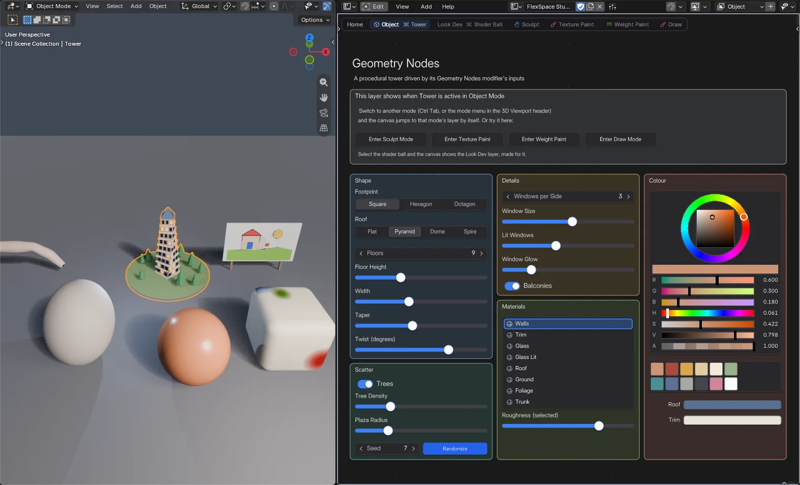
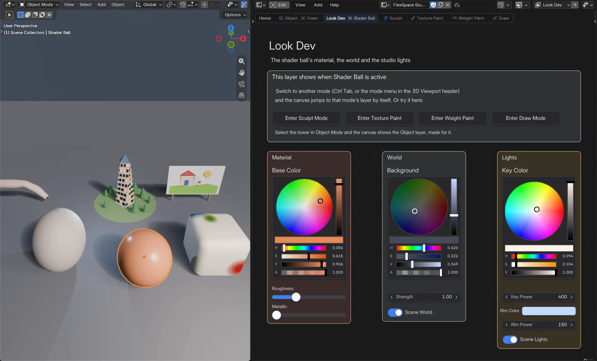
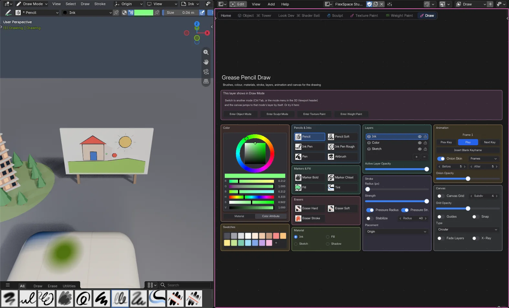

Every recipe uses the same few moves:
- Make a canvas and set its page's mode (the icon next to the page in the sidebar's Pages panel, see The Canvas > Pages and modes). One canvas can hold a page per mode: it shows the right one when you change mode.
- In Edit Mode, Shift+A adds a widget. Shift+A > From Property adds one already bound to a property you right-click. From anywhere, right-click a property or button > Add to FlexSpace Canvas does the same without opening the canvas.
- Ctrl+J puts the selected widgets in a Frame. Give it a Title and a colour.
- Tab goes back to Live Mode to use the canvas.
FlexSpace Studio: one canvas for every mode#


ScreenshotThe FlexSpace Studio demo is one canvas with a Home page and a page for each mode, and one scene with an object for each page: a Geometry Nodes tower, a shader ball, a head to sculpt, a box to paint, a rigged arm and a Grease Pencil drawing. Change the mode and the canvas changes with it. The recipes below build its pages one by one.
You will need: a Flex Space canvas with one page per mode, and an object that can enter each mode.
- Make the canvas. Add a page per mode with the + next to the page selector, and set each page's mode in the Pages panel of the sidebar (N): for example Object Mode, Sculpt Mode, Texture Paint, Weight Paint and Draw Mode.
- Keep Switch Pages Automatically on (the Pages panel). Now Ctrl+Tab, or the mode menu in the 3D Viewport header, also changes the canvas to that mode's page. Two pages can share a mode: the first one shows, and you pick the other from its tab. A page made for an object (Show When > Object) shows when you select that object.
- Build each page in Edit Mode (Tab). Edit Mode works in any Blender mode, so you don't have to enter the mode first.
- Add a note on each page: a Frame whose Title says which mode it is for, coloured like the mode, with a Label or two in it.
- Add Try it buttons to the note: Operator buttons that run Enter Mode (
flexspace.). Set its Mode, its Object and View Object. A click makes that object active and selected, frames it in the 3D Viewport and enters the mode, and the canvas shows the mode's page.enter_mode
- Add a default page as the first tab: a Home page with Show When > Always. Switch Pages Automatically shows the most specific page that fits, and Always is the least specific, so Home only shows when no other page does. Without it, leaving Sculpt Mode with the head still active would leave the canvas on the Sculpt page, dimmed because it no longer fits. Give Home a welcome note and a button for each of the other pages.
Demo file: FlexSpace Studio. It opens in Object Mode on the Object page. Home has a button for each page, and every other page has the note and a Try it button for each of the other modes.
Object page: Geometry Nodes controls#
You will need: an object with a Geometry Nodes modifier, an Object Mode page, Enums, Number Fields, Sliders, Toggles, a Color Picker, a Color Palette, a Script button, a List and Frames.
- Select the object, and set the page's Show When to Object in Mode: Object Mode, with the tower as its Object (Use Active). The page now shows while the tower is active in Object Mode.
- Bind widgets to the modifier's inputs by their path, for example
active_object.. To get an input's path, right-click it in the modifier panel and choose Copy Data Path, then putmodifiers["GeometryNodes"]. properties. inputs. Socket_2. value active_object.in front. Pin each widget to the object, so the canvas keeps driving it when another object is active. - A Menu Switch input is an enum: an Enum set to Segmented shows its items as buttons. Use Number Fields for counts (Floors, Windows), Sliders for sizes (Width, Taper, Twist) and Toggles for on/off inputs (Balconies, Trees).
- Add a Color Picker bound to a colour input. To use it in a material, store the colour with a Store Named Attribute node and read it with an Attribute node in the material. A Color Palette with a few ready colours goes under it.
- For a Randomize button, add a Script button that sets the Seed input to
random..randint(0, 9999) - Add a List with its Source set to Material Slots: click a row to select the material, then a slider for its roughness (
active_object.).active_material. . . - Frame the blocks: Shape, Details, Scatter, Materials and Colour.
In the demo: the tower on its plaza with trees, made by one Geometry Nodes modifier.
Look Dev page#


ScreenshotYou will need: a page made for the shader ball, Color Pickers, Sliders, Number Fields, Toggles and Frames.
- Add a page, select the shader ball, and set the page's Show When to Object, with Use Active. Now selecting the ball shows this page.
- Add a Color Picker for the material's Base Color, and sliders for Roughness and Metallic. Pin them to the object.
- Add a Color Picker for the world colour and a Number Field for its Strength.
- Add a Color Picker and a Number Field for the key light's colour and Power, and a swatch and a field for the rim light. Pin each one to its light.
- Add toggles for the 3D Viewport's Scene World and Scene Lights. Material Preview ignores the scene's lights and world without them.
In the demo: the shader ball, the studio's key and rim lights, and the world.
Sculpt page#
 Screenshot
ScreenshotYou will need: a Sculpt Mode page, Brush Pickers, Sliders, an Enum, Toggles, Operator buttons and Frames.
- Add a page and set its mode to Sculpt Mode.
- Add the brushes: Shift+A > Buttons > Brush Picker. In the sidebar, Choose Brush picks one, for example Draw, Clay Strips, Inflate, Smooth, Flatten or Grab. Add one per brush.
- Group them by job. Select a few and press Ctrl+J to frame them: for example Basic, Smooth & Flatten, Detail and Masking.
- Add the stroke: sliders for Radius and Strength, an Enum for the brush Direction, and X, Y, Z toggles for symmetry. From Property on the tool settings is the quickest way.
- Add Operator buttons for Voxel Remesh, Symmetrize, the mask tools and the face set tools.
- Add the viewport rows: Set Value toggles for Solid and Material shading and for Matcap and Studio lighting, toggles for Wireframe and X-Ray, and a Dyntopo button.
In the demo: a base head ready to sculpt.
Texture Paint page#
 Screenshot
ScreenshotYou will need: a Texture Paint page, a Color Picker, a Color Palette, Brush Pickers, Sliders, Toggles, Operator buttons and Frames.
- Add a page and set its mode to Texture Paint. Its object needs UVs and an image in its material.
- Add a Color Picker bound to the paint colour. Set its Shape to Ring + Square and turn on RGB and HSV under Show. Add a Swap button next to it for the secondary colour.
- Add a Color Palette under it, bound to the same colour. Set its Source to Palette to use a Blender palette.
- Add Brush Pickers for the paint brushes, in framed blocks: for example Paint (Paint Hard, Paint Soft, Airbrush), Blend & Fill (Smear, Blur, Clone, Fill) and Erase & Mask.
- Add brush settings (radius and strength sliders), toggles for the mask, the stencil and symmetry, and viewport toggles.
- Finish with a Save All Images button, so your painting is never lost.
In the demo: a rounded box with a few dabs of paint on its image.
Weight Paint page#
 Screenshot
ScreenshotYou will need: a Weight Paint page, Brush Pickers, Sliders, Enums, Toggles, Operator buttons and Frames.
- Add a page and set its mode to Weight Paint. Its object is a rigged mesh.
- Add Brush Pickers for the weight brushes in two framed blocks: Paint (Set Weight, Add Weight) and Blend (Blur, Average, Smear).
- Add the brush: sliders for radius and strength, Enums for the blend and the falloff.
- Add a Brush Weight slider. Under it, a row of small Operator buttons for quick values: 0, .25, .5, .75 and 1.
- Add toggles for Auto Normalize, Multi-Paint, Lock-Relative and Restrict, and for mirror symmetry.
- Add Operator buttons to clean up the vertex groups, and viewport toggles for zero weights, contours and wireframe.
In the demo: a rigged arm. Enter Mode selects its armature too, so Ctrl click a bone to paint its group.
Draw page: Grease Pencil#


ScreenshotYou will need: a Draw Mode page, Brush Pickers, a Color Picker, a Color Palette, a List, Sliders, Toggles, Operator buttons and Frames.
- Add a page and set its mode to Draw Mode. Its object is a Grease Pencil object.
- Add a Color Picker and a Color Palette for the brush colour. Set the Color Mode to Vertex Color, so that colour is the one drawn.
- Add Brush Pickers for the draw brushes in framed blocks: Pencils & Inks, Markers & Fill, and Erasers.
- Add buttons for the material slots, and a Stroke block: radius, strength, pressure and the stabilizer.
- Add a Layers block: a List with its Source set to Grease Pencil Layers (click a layer to make it active, the eye and lock on each row, + and − to add and remove), and a slider for the active layer's opacity. Then add an Animation block: Prev Key, Play, Next Key, Insert Blank Keyframe and onion skinning.
- Add a Canvas block with toggles for the grid and the guides.
In the demo: a small drawing on three layers (Sketch, Color, Ink) and a ball keyed on three frames.
Rigify body picker#
 Screenshot
ScreenshotYou will need: a rig generated with Rigify, an Armature Picker, and the Humanoid Body (Rigify) chart.
- Select the generated rig (not the metarig) and enter Pose Mode.
- Set an area to Armature Picker and click New Picker.
- Press Tab for Edit Mode, then Shift+A > Bone Picker > Humanoid Body (Rigify).
- Pick the Body (Adult Male or Adult Female), the pages (Body, Hands, Feet), the Scale, and turn on IK/FK Switches. Keep Character Backdrop on to have the drawing behind each page.
- Press Tab and click a shape to pick its bone.
Demo files: Rigify Male Body Picker and Rigify Female Body Picker.